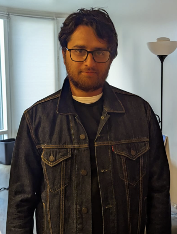
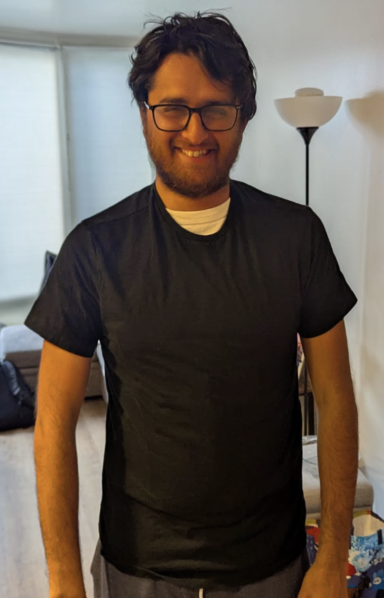
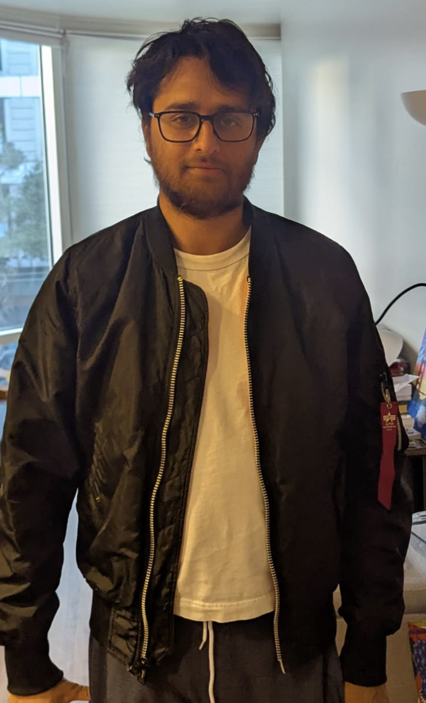
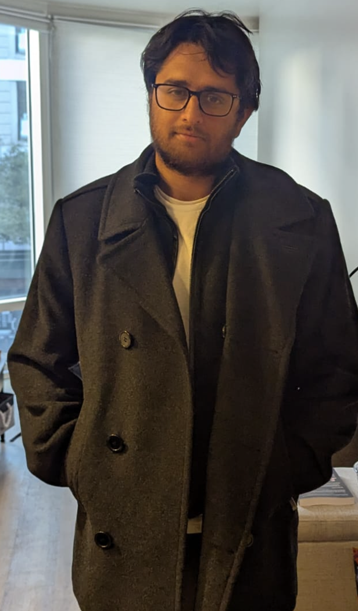
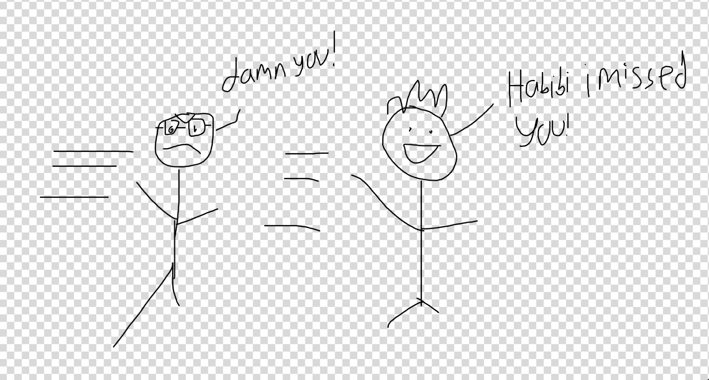
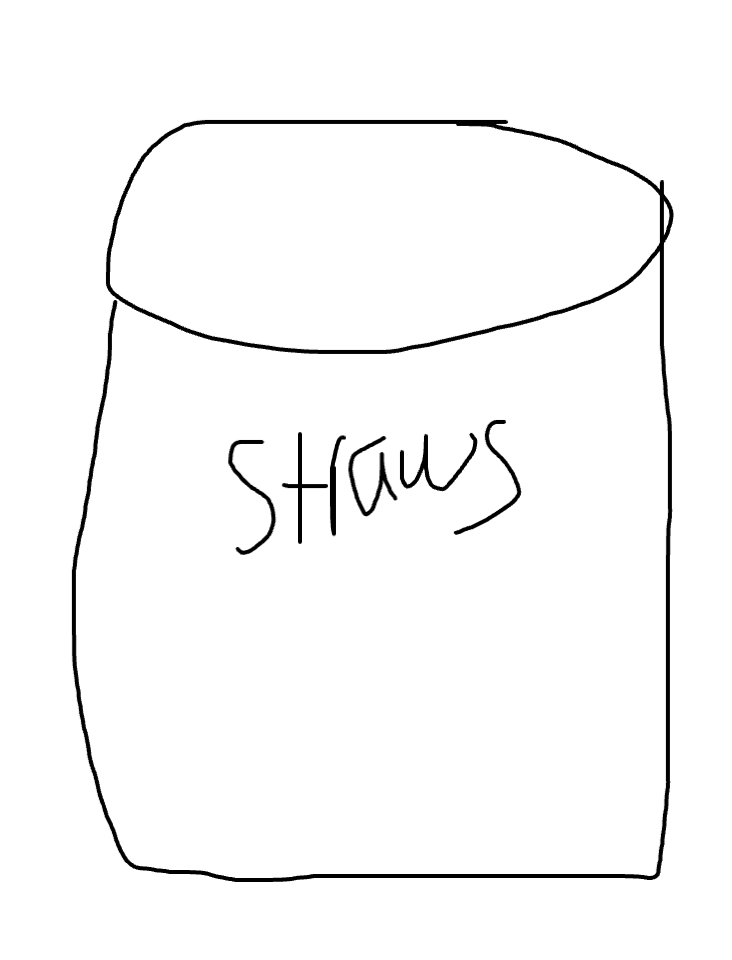

Episode 13
Pride
Monday
The day begins with me going jet skiing. This was one of the last things I really wanted to do while I was in Hawaii. It was pretty fun! The one downside was that we did have to stick to a fixed track doing laps as opposed to varied paths but I still quite liked the rush.
Once I did that I realized I did more or less everything I wanted to do in Hawaii. I toyed with the idea of trying the Koko Crater Trailhead along with all those steps again but ultimately I decided to just chill on the beach instead.
It was at this point I realized I did everything I really wanted to do in Hawaii and was ready to head home. Its not as though I was miserable the rest of my time here moreso that I feel the trip was pretty complete. I often feel this way when travelling as I think I have a tendency to travel for longer than I normally should. Usually this happens because whenever I book a vacation I get really excited about it and I assume I want to travel for much longer than I wind up wanting to in practice, although I suppose thats better than the other way around.
Tuesday
Today I get ready to head back to SF! My flight isn’t til 5PM that day so I casually chill in the morning before heading out. For my last meal I wind up realizing I can get all you can eat KBBQ for just 25! I’m really annoyed that I only discovered this my last meal before my trip ends :( . Additionally I also only discovered this after having already eaten lunch so when I go I don’t get as much of my moneysworth as I normally do but oh well its still good!
Flying back to Hawaii the TSA wasn’t as annoying as it was on the way back so I have a relatively smooth if long flight back.
Unfortunately due to timezones I don’t get back home until about 1 AM PST which is a bit annoying. Its slightly useful though because tomorrow I start fasting for the month of Ramadan so when I get home I use that time to eat a meal and some water before going to sleep
Wednesday
Today I work on a personal project for a while and do some interview prep. More specifically I’m doing a mock interview for one of my friends whose looking for a job. (Unrelated note if any of y’all are working at companies hiring for backend roles in data infrastructure and distributed systems lmk I know someone looking :D ).
I either picked too easy questions for the mock interview or my friend is just really good as he blew through what I gave faster than I thought he would (even after having seen one of the questions before). I also gave a behavioral interview as well which I’m less versed in. I think he did well but I’m worried I didn’t really probe in as much and ask enough hard questions. Sorry my guy.
After that this friend suggests that I try on some of his clothes to see what stuff looks good on me since I mentioned I wanted to up my fashion game. Here are some of the different outfits I tried on to get a sense of what kinda things could be for me




Some of the big takeaways here are
Black t-shirts don’t really do me any favors since they show my gangly arms
The peacock jacket could be good but I would need to change more of my wardrobe
White t-shirts on the other hand could work for me
I can’t really do the bad boy look and thus leather jackets may not be my thing
After this we go to run club. This was definitely one of the toughest run clubs I had in a while thanks to my friend. He really knew how to get me out of my comfort zone and pushing me to do better. At this point I’ve done run club long enough that I can normally go at a pretty comfortable pace and not feel too strained after doing it, but then he comes long and zips ahead of me forcing me to actually exert myself. The FIEND!! This is about what would happen every time I caught up to him

Of course I could have just let him run ahead of me and not cared but my dang pride wouldn’t allow that. It felt like a real kick in the pomegranates. So whenever he would race ahead of me I gritted my teeth and caught up. There are many people I’ve gone running with who I was fine to let overtake me but somehow in this case I just couldn’t.

During the last leg of the run all the straws were gone as pictured above and I did the one thing I never do at Midnight Runners and used my full power. I furiously sprinted as hard as I could and left my friend in the dust. The very thought of him catching up to me fueled me long past where I would have naturally given up. I guess there is a lesson in there somewhere.
Thursday
Today I get a haircut (partially inspired by the photos above), and head home to see my parents. It was my Mom’s birthday while I was in Hawaii and I hadn’t seen my parents in about 2 months so I figured now was as good a time as any to go and see them.
After dinner my Mom and I have a conversation where we talk a lot about the concept of pride. For context this comes up after a phone call we had a while back where I mention that I sometimes have a hard time taking advice due to pride. She mentions that she is proud of me for admitting that as one of the hardest things for people to do is to master their ego being something that takes a lifetime and just admitting that is already an impressive first step. She wants me to dive further into what I mean about this.
What I tell her is that for better or worse I’m someone who tends to live life more by the beat of my own drum. I’m someone who likes to do things his own way more than most people I know and as a result I find it hard to change. This can be a big source of pride for me and something which has caused problems when theres well meaning and correct advice that I should take but am reluctant to do so. The conversation goes deeper but to explain it and to give more context for future events in this newsletter I’ll need to invoke a concept that may be triggering to liberal / progressive society; I’ll need to invoke the R-word. Thats right, I’m talking about Religion. Of course I”m not trying to convert anyone or anything but this is what we are talking about and all.
The conversation then goes into how pride can lead us to think we are always in control and that we know best about what to do in any given situation. This can lead to a lack of faith which is antithetical to what Islam stands for. She brings up how for one to have faith one needs to accept that we don’t know whats best and that we as humans are made weak.
I realize from this that my own pride can lead me to think that my own way of doing this is always the best when it may not be. Its good to stand for ones principles but that shouldn’t turn into delusion and I do need to be better about taking advice.
My Mom tells me an interesting story from the Quran about understanding the limits of our own knowledge and abilities. Originally I was going to type the story up in my own words but this is the rare exception where I’ll break a usual rule of my newsletter because I think the story is best conveyed through an online translation that best captures the details
“Moses said to him, ‘May I follow you so that you can teach me some of the right guidance you have been taught?’ The man said, ‘You will not be able to bear with me patiently. How could you be patient in matters beyond your knowledge?’ Moses said, ‘God willing, you will find me patient. I will not disobey you in any way.’ The man said, ‘If you follow me then, do not query anything I do before I mention it to you myself.’ They traveled on.
“Later, when they got into a boat, and the man made a hole in it, Moses said, ‘How could you make a hole in it? Do you want to drown its passengers? What a strange thing to do!’ He replied, ‘Did I not tell you that you would never be able to bear with me patiently?’ Moses said, ‘Forgive me for forgetting. Do not make it too hard for me to follow you.’ And so they traveled on.
“Then, when they met a young boy and the man killed him, Moses said, ‘How could you kill an innocent person? He has not killed anyone! What a terrible thing to do!’ He replied, ‘Did I not tell you that you would never be able to bear with me patiently?’ Moses said, ‘From now on, if I query anything you do, banish me from your company– you have put up with enough from me.’ And so they traveled on.
“Then, when they came to a town and asked the inhabitants for food but were refused hospitality, they saw a wall there that was on the point of falling down and the man repaired it. Moses said, ‘But if you had wished you could have taken payment for doing that.’ He said, ‘This is where you and I part company.
“‘I will tell you the meaning of the things you could not bear with patiently: the boat belonged to some needy people who made their living from the sea and I damaged it because I knew that coming after them was a king who was seizing every [serviceable] boat by force. The young boy had parents who were people of faith, and so, fearing he would trouble them through wickedness and disbelief, we wished that their Lord should give them another child– purer and more compassionate– in his place. The wall belonged to two young orphans in the town and there was buried treasure beneath it belonging to them. Their father had been a righteous man, so your Lord intended them to reach maturity and then dig up their treasure as a mercy from your Lord. I did not do [these things] of my own accord: these are the explanations for those things you could not bear with patience.’” (18: 66-82)
The point of this story is to convey that there are things beyond what we know which we cannot comprehend and because we have such limits we also shouldn’t be so prideful. While I still want to live life my own way I want to find a more tempered solution.
Another thing we talk about is the need for gratitude for everything that we have. One point about this is how everything we achieve we do with the help of God. When thinking about this I reflect on a saying that I hear people use a lot which is well intentioned but gave me pause for thought. Specifically the saying “I’m built different”. Of course I understand its hyperbole and not meant to be taken literally but even still I can’t help but wonder if it does reinforce a message that we do everything ourselves. I don’t use the saying that much but if I do I personally want to stop using it going forward at least for myself anyway.
Friday
Today I have another talk with my Mom where she comments on a couple things shes concerned about with me. The first is that she is worried that I’m not actively trying to engage with my faith the way that I should. Honestly I think she may be right. While I’m doing things like fasting this Ramadan and praying when I have the chance I haven’t really been trying to dig deeper and learn more. She brings up that faith is a commitment and I need to do my part to really engage more. I really need to do more like read the Quran more and learn more about how I should and should not conduct myself as a Muslim. My knowledge is still rather surface level despite being 28 years old and a large part of that is I’m very preoccupied with my day to day life and don’t really focus too much on religion.
I should make religion another facet of myself I seek to improve like my career, trash pickup, or running as opposed to just passively going through and sticking with what I know.
Another point she brought up is the fact that I don’t really have many Muslim friends. This is something she has told me for a while and I admit I haven’t really made it a priority in my life. The main way I’ve found friends is through different activities and interests which has been great (I love y’all and am glad to call you all friends of course), but at the same time I have to admit that much like with point one above I do need at least some Muslim community to cultivate and I have been neglecting it. I need to figure out the best way to do this as organically I think I’ve only met a couple of Muslims just by doing my every day activities. Perhaps going to the mosque more and meeting folks there could be a good start.
After this I go back home and get KBBQ with friends. Its always a pleasure brining folks to Kogi Gogi and today I learned the waiters there remember me. This means I’m a bonafide regular :D. The meal is great as it always is and it seems like all my friends enjoyed it as well.
As the meal comes to an end it looks like some of my other friends are hanging out over at Detour. At first I’m keen to join them as among that group of friends are 3 people that I haven’t talked to in months and would very much like to see again. Its been difficult finding a time to hang out with them to the point that I refer to them as rare Pokémon.
Unfortunately, conversation with KBBQ crew is as lively as ever and I don’t really want to abandon it. Especially when I learn interesting stories about meeting women in the Tenderloin. In the end I decide to stick with the KBBQ boys and its a great time. A chance to catch the rare Pokémon would have been fun but its best to live in the moment sometimes. And I’m rewarded with a trip to one of SF’s hidden gems, the pissoir in GGP park. For those unaware this is an outdoor urinal located near 20th and Church St by Dolores park. I didn’t know this actually existed but now I do and it was certainly a sight to behold.
Saturday
The day begins with trash pickup. After a week in Hawaii I definitely missed this. I was talking with one of my trash friends and I learned that the book series he has been writing has its own discord group. I already knew this guy was writing a book series but when I talked with him more I learned he has an active fan group with early chapter releases, popularity polls, and even shipping wars. This is so cool! I got an invite to the discord and I definitely need to check this out and read some of the chapters!
After that me and some other friends helped a friend move. Its pretty uneventful but satisfying nonetheless. She then takes out for Korean food at Manna. I’m still fasting at this point in the day so I don’t eat any but its still a great time. Its not as fun as going to Plow and not ordering but its still satisfying.
When we get to Manna but before we get seated I take a quick sidebar to call my Mom. After our conversation there was one thing I wanted to ask her point blank which was if she was worried about me. She said she was because since I didn’t have a Muslim community and wasn’t actively engaging with my faith as much she wanted to make sure I was. One thing I noticed the last few times I went home was that religion largely dominates our conversations and this explains why. Since she wants to make sure I talk about this stuff regularly and she doesn’t think I have a community outside of the family to talk about it with (which is unfortunately correct) she feels that the time I am home should be spent on this. To be honest it did kind of frustrate me that my visits home felt so heavy but this gives me important context and I feel like I understand her better.
To be clear I am doing all this out of my own volition and if I didn’t I wouldn’t but I understand why as a parent she wants to make sure I talk about this stuff regularly with someone. I hope that as I find more of a Muslim community outside of the family she doesn’t feel this worry as much anymore.
Sunday
Trash pickup is how I start my day as is typical for a Sunday. After that I post trash hang with some friends for a while. During our conversation we talk about a number of weird things some of us have done like getting rid of WiFi in the apartment, using an airpurifier as a chair, and eating Greek Yogurt straight from the bowl. I’m curious to see how weird you all find these things so I made a poll where I ask y’all to rate the weirdness from 1-5. Try to see which weird things were mine (I think most of y’all should be able to guess these). Heres the Google Form,
After this some of my friends take me to the thrift store to find a couch and coffee table as they insist I need it. Although to be fair one of these friends has never been to my place so for all she knows I could have a sufficient amount of furniture.
From there I go home and write up the newsletter. Tomorrow is the first day of my new job and the end of my 3 week long unemployment arc. I’m a bit anxious but also excited. Hoping this will be fun!